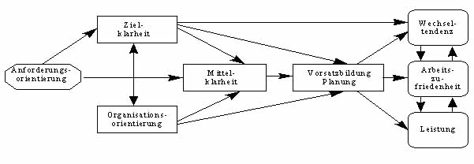

DOI: https://doi.org/10.11588/ip.2019.1.52673
Jeder Artikel muss eine Zusammenfassung in deutscher Sprache enthalten. Die Zusammenfassung soll einen kurzen und vollständigen Überblick über den Inhalt des Artikels geben. Die wichtigsten Ergebnisse, Hintergrund und Vorgehensweise des Artikels sollten klar nachvollziehbar aus der Zusammenfassung hervorgehen. Der Umfang der Zusammenfassung ist auf 700 Zeichen (incl. Leerzeichen) beschränkt. Die Zusammenfassung sollte aus einem einzelnen Absatz bestehen.
Schlüsselwort 1, Schlüsselwort 2, Schlüsselwort 3 (max 5)
Every article must contain an English abstract. The abstract is limited to one paragraph and up to 700 characters.
keyword 1, keyword 2, keyword 3 (max 5)
Veröffentlichung: 10.03.2019 in Informationspraxis Bd. 5, Nr. 1 (2019)
Titel, Zusammenfassung, Schlüsselwörter und Angaben zu den AutorInnen (alles in deutsch und englisch) bitte ausschließlich im Formular auf der vorherigen Seite. Bitte kein Inhaltsverzeichnis erstellen, das wird von der Redaktion automatisch generiert. Kurze, prägnante Überschriften verfassen und bitte keine (durchgängige) Großschreibung verwenden.
Wir empfehlen für Kurzbeiträge eine Länge bis etwa 12.000 Zeichen und für Fachbeiträge eine Länge bis etwa 40.000 Zeichen.
Alle Beiträge erscheinen unter der Lizenz Creative Commons Namensnennung 4.0. Die AutorInnen treten darüber hinaus keine Rechte an Informationspraxis ab.
Abbildungen bitte als Bilddatei einfügen und nicht weiter formatieren. Abbildungen bitte mit Bildunterschriften versehen in der Form „Abb. 1: …" und durchnummerieren.

Abb. 1: Titel Abbildung 1
Kurze Zitate im Fließtext. „Ein wörtliches Zitat soll sehr sparsam eingesetzt werden." (NAME, Vorname & NAME, 2014).
Längere Zitate einrücken:
„Text hier. Text hier. Text hier. Text hier. Text hier. Text hier. Text hier. Text hier. Text hier. Text hier. Text hier. Text hier. Text hier. Text hier. Text hier. Text hier. Text hier. Text hier. Text hier. Text hier. Text hier. Text hier. Text hier. Text hier. Text hier. Text hier. Text hier." (NAME, Vorname & NAME, 2014)
Hervorhebungen (kursiv, fett) sparsam einsetzen.
Als weitere Formatierungen sind hochgestellt, tiefgestellt und durchgestrichen möglich.
Verwenden Sie Fuß-1 oder Endnoten2 allenfalls für notwendige Anmerkungen.
Einfache Tabellen ohne weitere Formatierungen können hier erstellt werden. Komplex formatierte Tabellen bitte als Bilddatei einfügen. Alle Tabellen bitte mit einer Bildunterschrift in der Form „Tabelle 1: …" versehen und durchnummerieren.
| Spalte 1 | Spalte 2 | Spalte 3 | Spalte 4 |
|---|---|---|---|
| Zeile 2 | 123,45 | 17,2 | 1232,23 |
| Zeile 3 | 56,78 | - | 189,9 |
| Zeile 4 | 198 | 67,325 | 789567,03 |
Tabelle 1: Zahlen und ein Minuszeichen
Einfache Listen werden unterstützt (spezielle Aufzählungszeichen werden ignoriert)
Nummerierte Listen werden ebenfalls unterstützt (wird im Layout jedoch immer zu 1,2,3 etc., unabhängig von der gewählten Form der Nummerierung)
Kurze und bedeutsame URLs können in den Fließtext aufgenommen werden: Zeitschrift Informationspraxis (http://informationspraxis.de)
Lange URLs als betitelte Links einfügen (und lieber nicht als Fußnote): Richtlinien für das Open Peer Review der Zeitschrift Informationspraxis
Querverweise im Dokument sind möglich, aber nur auf zuvor selbst erstellte Textmarken. Dazu zuerst an die gewünschte Textstelle wechseln und über die Funktion Textmarke eine Textmarke hinzufügen. Anschließend über die Funktion Link (STRG+K) und dann den Button Textmarke die erstellte Textmarke auswählen. Querverweise auf Überschriften werden nicht unterstützt. Beispiel für einen Querverweis: #Tabelle1
Code und Datensätze sollten in Artikeln überschaubar bleiben und angemessen beschrieben werden. Der wesentliche Inhalt und Zweck eines Code-Abschnitts sollte auch ohne tiefere Kenntnisse des Datenformates bzw. der Programmiersprache erkennbar sein.
Für Code-Abschnitte bitte immer die Formatvorlage Source Code verwenden, damit doppelte Leerzeichen usw. erhalten bleiben.
240 10 _aLiving my life <dt.>
245 10 _aGelebtes Leben
_bAutobiografie
_cEmma Goldman. Mit einem Vorw. von Ilija Trojanow.
250 _aErstausg., 1. Aufl.
260 3 _aHamburg
_bEd. Nautilus
_c2010Abb. 2: Ausschnitt aus einem MARC-Datensatz
Umfangreichere Daten und Programme sollten in etablierten Forschungsdaten- und/oder Code-Repositories verfügbar gemacht und im Artikel verlinkt werden.
Die einer Veröffentlichung zugrunde liegenden Rohdaten sollten - sofern Urheberrecht und Datenschutz dem nicht im Wege stehen - unter der Lizenz CC-BY frei und öffentlich zur Verfügung stehen. Auf re3data.org finden AutorInnen eine große Auswahl an Repositories, auf denen Rohdaten veröffentlicht werden können. Informationspraxis empfiehlt die Nutzung von Zenodo.org. Hier ist eine Community Informationspraxis eingerichtet, in welche die Daten hochgeladen werden können.
Informationspraxis empfiehlt die Verwendung von Open-Source-Software. Wenn Sie quelloffene Software zur Verarbeitung von Daten nutzen, sollten Quellcode und Prozess so weit wie möglich nachvollziehbar gemacht werden (R-Skripte etc.). Der Quellcode zu verwendeter Software sollte ebenfalls möglichst offen zur Verfügung stehen.
Wir empfehlen den Zitierstil Harvard nach GBFE (Gesellschaft für Bildung und Forschung in Europa; "Harvard author-date style with German Unisa / GBFE changes"). Der Stil befolgt folgende Grundsätze:
Christensen, Anne (29. Aug. 2012): Mentale Modelle: Die Brücke zwischen Discovery Tools und Informationskompetenz? [online]. Zugriff am: 10. Juli 2014. Verfügbar unter: http://xenzen.wordpress.com/2012/08/29/mentale-modelle-die-brucke-zwischen-discovery-tools-und-informationskompetenz/
Klee, Carsten (2013): Vokabulare für bibliographische Daten. Zwischen Dublin Core und bibliothekarischem Anspruch. In: Patrick Danowski und Adrian Pohl, Hg.: (Open) linked data in Bibliotheken. Berlin: de Gruyter Saur, S. 45-63. Verfügbar unter: https://doi.org/10.1515/9783110278736.45
Weinberger, David (2008): Das Ende der Schublade. Die Macht der neuen digitalen Unordnung. München: Hanser.